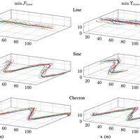
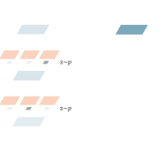

I am a graduate student at University of Cambridge studying for Master of Engineering degree. Prior to graduate study, I obtained my bachelor’s degree from University of Cambridge in 2020.
My research interest lies in robotics learning , with specific interest in bio-inspired multi-agent and human-robot interactions . Currently, I am focusing on multi-agent communication through GNN for my master’s thesis under co-supervision of Prof. Amanda Prorok and Dr. Fulvio Forni.
EDUCATION
University of Cambridge
Master student in Information and Computer Engineering | 2020 - present
Supervisor: Prof. Amanda Prorok ,
Dr. Fulvio Forni
University of Cambridge
Bachelor of Arts in Engineering | 2017 - 2020
First Class (Top 2%)
Supervisor: Prof. Amanda Prorok
PUBLICATIONS

An Adversarial Approach to Private Flocking in Mobile Robot Teams
Hehui Zheng, Jacopo Panerati, Giovanni Beltrame, Amanda Prorok
RA-L/ICRA 2020
[ paper] [ code] [ presentation]

DSNAS: Direct Neural Architecture Search without Parameter Retraining
Shoukang Hu, Sirui Xie, Hehui Zheng, Chunxiao Liu, Jianping Shi, Xunying Liu, Dahua Lin
CVPR 2020
[ paper] [ code]
SNAS: Stochastic Neural Architecture Search
Sirui Xie, Hehui Zheng, Chunxiao Liu, Liang Lin
ICLR 2019
[ paper] [ code]
CONTACT
Email: hz337.cam.ac.uk
Github: https://github.com/HehuiZheng
Location: Selwyn College, Cambridge, UK CB3 9DQ